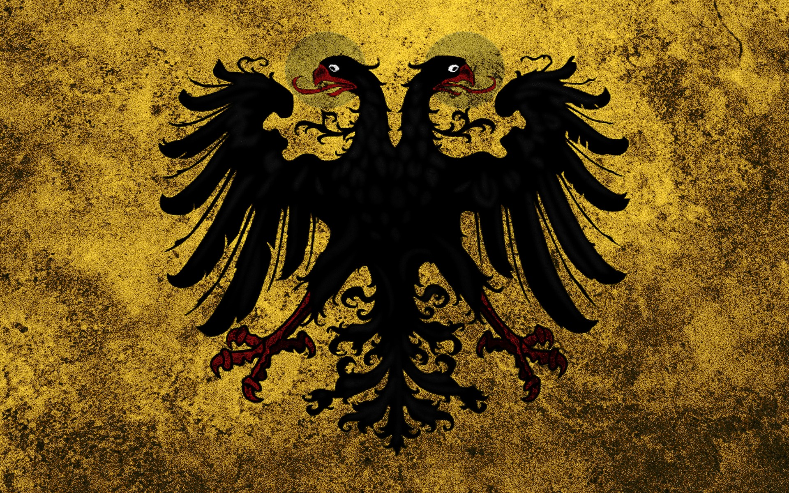

СВЯЩЕНА РИМСЬКА ІМПЕРІЯ
Священа Римська Імперія, з 1512 року — Священна Римська імперія німецької нації (лат. Sacrum Imperium Romanum Nationis Germanicae або Sacrum Imperium Romanum Nationis Teutonicae, нім. Heiliges Römisches Reich Deutscher Nation) держав та народів, що існував з 962 по 1806 роки. У період найвищого розквіту до складу імперії входили: Німеччина, що була її ядром, північна та центральна Італія, Нижні Землі, Чехія, а також деякі регіони Франції. З 1134 Священна Римська імперія формально складалася з трьох королівств: Німеччини, Італії та Бургундії. З 1135 до складу імперії увійшло королівство Чехія, офіційний статус якого в складі імперії був остаточно врегульований в 1212 році.

Прапор Священої Римської Імперії.